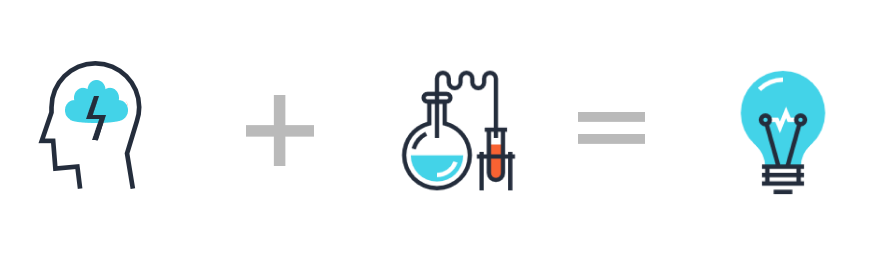

Professors are generally quite busy and difficult to get in touch with; however, one of the best ways to do this is through email. Their email addresses are generally provided on the college's or laboratory's webpage. Sometimes, professors will not respond, so we recommend you email multiple professors. In the email, you should include the following pieces: your name, current school, previous science experience, reason for wanting to do research, research interest, and résumé. In addition, you can simply email them about a recent paper they published, which will show that you are interested in the subject and make the professor more inclined to offer you a research position.
Sometimes the best way to get a laboratory is to look to the people closest to you. Do you have friends or family members who work/have worked in a laboratory near you? Do you know anyone who works at a local university? Does your guidance counselor have any advice from past students who have worked in research laboratories? These are important questions that can help you potentially get a foot in!
Summer research programs are probably the most direct way to be placed in a laboratory, assuming you have the credentials to gain acceptance into the program. For a listing of some of the research programs across the nation, visit our Programs, Competitions, and Scholarships page.
Many research opportunities exist outside of the typical university lab! If you are interested in doing independent research, there are still several steps that you will need to take in order to be successful. For more information on doing a project independent of a university laboratory, contact Wyatt Pontius.